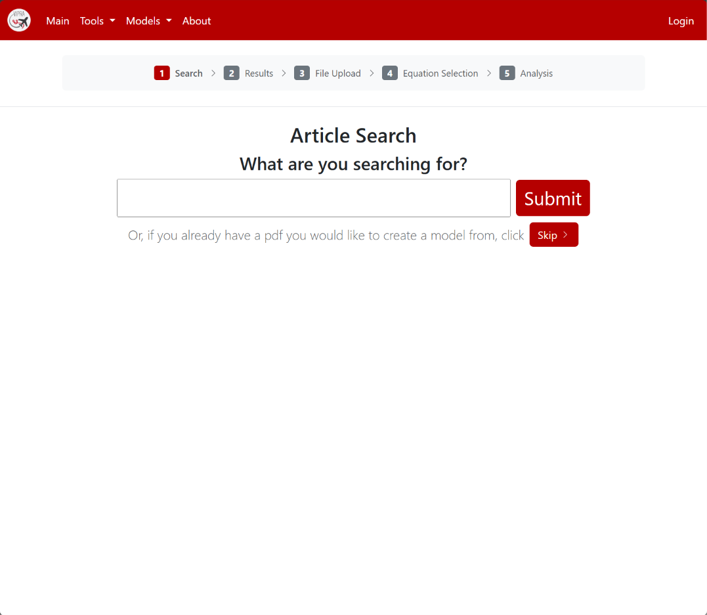
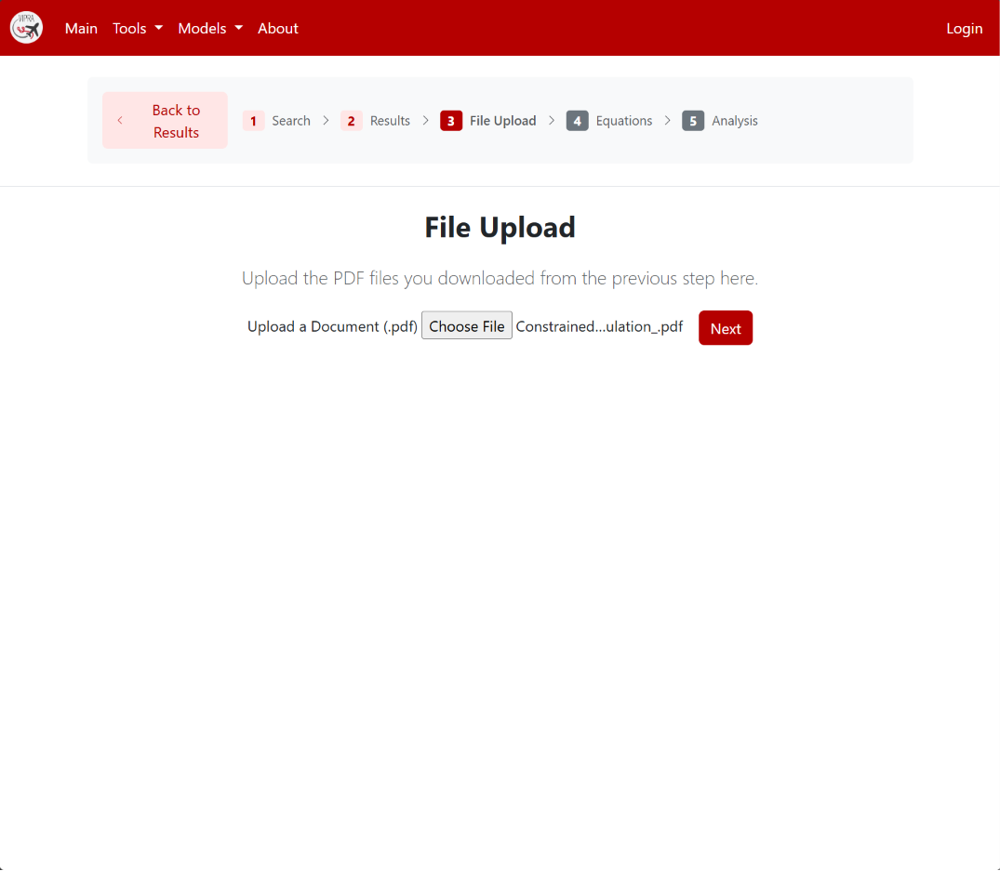
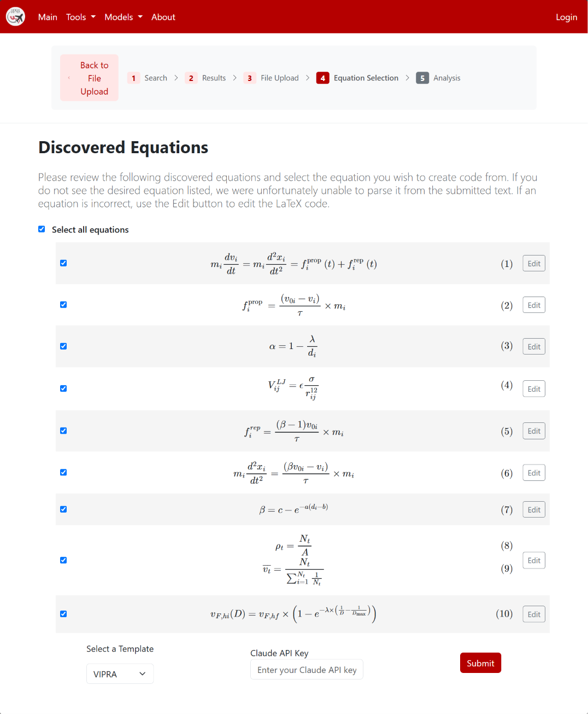
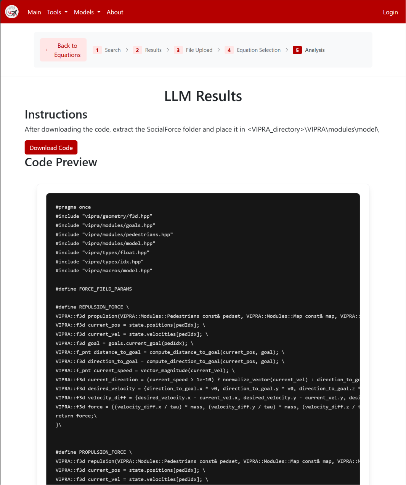

VRS is available at vipra.csproject.org
If VRS is down, go to the link below for the full prompt and alternative code generation instructions:
VRS Code Generation PromptFirst, locate the code generation tool under Tools -> Article Search
You can use the search here to search for Social Force models, or if you are using your own pdf, select "Skip. This will take you to the pdf upload page."

Here, you can upload your pdf and then select "Next"

The pdf will be analyzed and search for all equations in the document. Once the equations are identified, the equations will be displayed on the page. Select the desired equations to include in the code generation. You do not need to select the template, as the only current template is VIPRA. You will, however, need to include your Claude API key for the next step. Then, click Submit.

The code will be displayed to preview. Select Download Code to download a zip file with the generated code and the rest of the required files for the module.

Proceed to the VIPRA usage instructions for details on how to integrate the generated code.
VIPRA Usage Instructions